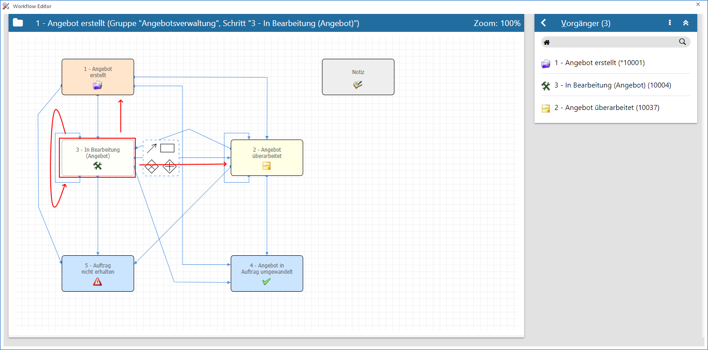
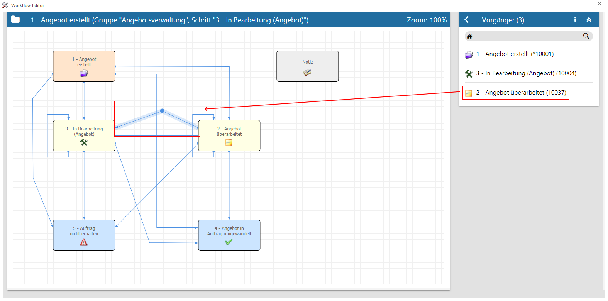

Definitionsbereich - Vorgänger
In dem Bereich "Vorgänger" werden jene CRM-Schritte angezeigt, die laut Workflow Editor vor dem gerade aktiv gewählten Schritt ausgeführt werden können.
Hinweis
Ein Start- bzw. ein Nebenschritt kann nie einen "Vorgänger" haben kann.

In diesem Beispiel ist der aktive Schritt "3 - In Bearbeitung (Angebot)". Dieser hat die Vorgänger "1 - Angebot erstellt", "2 - Angebot überarbeitet" und (per Schleife) "3 - In Bearbeitung (Angebot)".
Ø Kopfzeile
In der Kopfzeile des Bereichs wird neben der Bezeichnung "Vorgänger" auch die Anzahl der Vorgängerschritte angezeigt.
Ø  Menü
Menü
Durch Anwahl des Menüs werden, abhängig vom aktuell gewählten Workflow-Objekt, weitere Funktionen zur Verfügung gestellt:
ü Maximieren / Minimieren
Bei
einem Maximieren werden die Vorgängerschritte als einziger Bereich in der
Definition angezeigt, bzw. bei einem Minimieren wieder alle Bereiche in der
Definition.
Hinweis
Über die Tastenkombination ALT + H kann der Bereich direkt maximiert bzw. minimiert werden.
Ø Tabelle
In der Tabelle werden alle Vorgängerschritte angezeigt, wobei Nebenschritte hiervon ausgenommen sind. Durch Anwahl eines Eintrags wird die entsprechende Kante im Graphen hervorgehoben.
Beispiel
